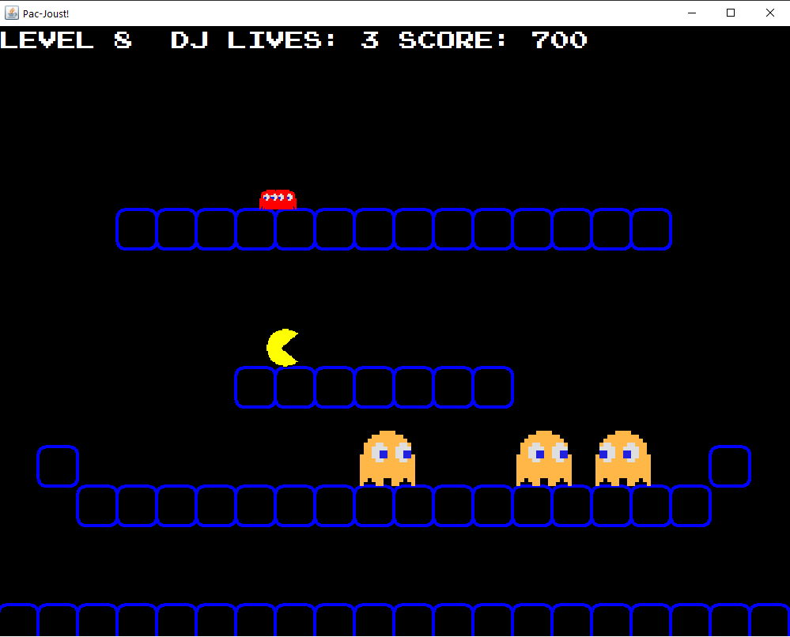
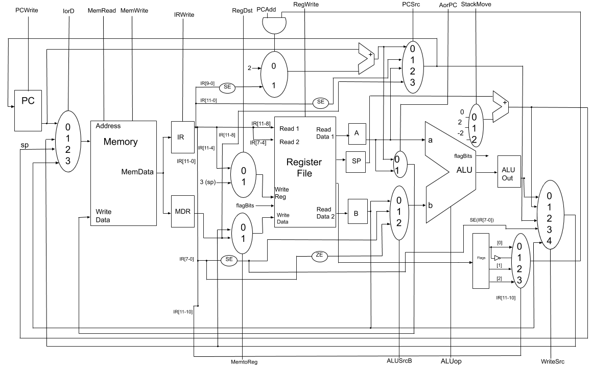

Portfolio
Here is a list of the various projects I have worked on.
-
Class Project: Joust Game for CSSE220
Two teammates and I built a game from scratch in Java, meant to mimic the gameplay of the classic Joust arcade game. Over the span of two months, we successfully built a working game with our own Pac-Man twist, involving sound effects and numerous levels and enemies.
-
Class Project: Processor and Architecture Design for CSSE232
I worked with three teammates to design and create a unique processor architecture from scratch. Using Xilinx ISE Design Suite, we wrote Verilog code and performed extensive integration testing to complete a custom instruction set capable of calculating relative prime numbers. Additionally, we wrote a fully detailed design document to reflect the process and give insight on design and decisions.
-
Class Project: "Sort My Professor" for CSSE333
As a team of two, a classmate and I created a program similar to Rate My Professor, but involving Harry Potter houses. We used MS SQL Server to create a database, and developed a front-end GUI in Java that connected securely to the database. Users were able to register or log in, add schools and professors to the database, and give ratings. Based on survey answers, professors were then dynamically sorted into a Hogwarts house and displayed for users to see.